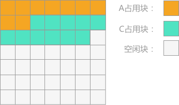
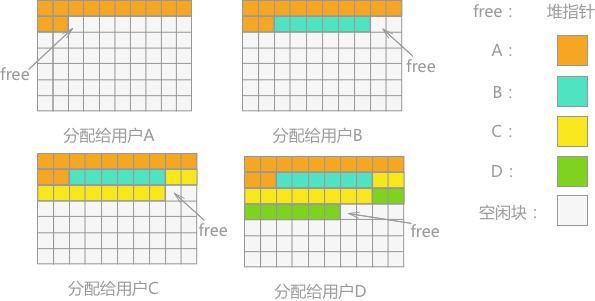
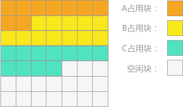
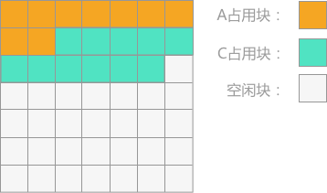
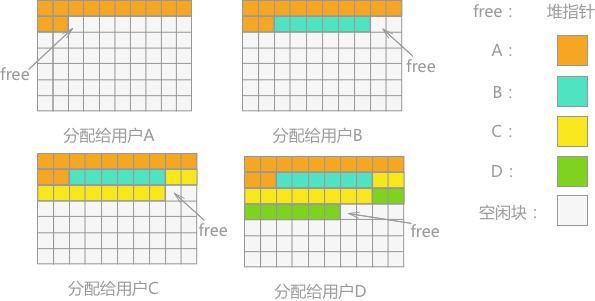

内存紧缩（内存碎片化处理）
前边介绍的有关动态内存管理的方法，无论是边界标识法还是伙伴系统，但是以将空闲的存储空间链接成一个链表，即可利用空间表，对存储空间进行分配和回收。
本节介绍另外一种动态内存管理的方法，使用这种方式在整个内存管理过程中，不管哪个时间段，所有未被占用的空间都是地址连续的存储区。
假设存储区的初始状态如图 1 所示，若采用本节介绍的方法管理这块存储区，当 B 占用块运行完成同时所占的存储空间释放后，存储区的状态应如图 2 所示：

图 2 更新后的存储区状态
例如，某一时间段有四个用户（A、B、C、D）分别申请 12 个单位、6 个单位、10 个单位和 8 个单位的存储空间，假设此时堆指针的初值为 0。则分配后存储空间的效果为：

存储紧缩有两种做法：其一是一旦用户释放所占空间就立即进行回收紧缩；另外一种是在程序执行过程中不立即回收用户释放的存储块，而是等到可利用空间不够分配或者堆指针指向了可利用存储区的最高地址时才进行存储紧缩。
具体的实现过程是：
本节介绍另外一种动态内存管理的方法，使用这种方式在整个内存管理过程中，不管哪个时间段，所有未被占用的空间都是地址连续的存储区。
这些地址连续的未被占用的存储区在编译程序中称为堆。

图 1 存储区状态
图 1 存储区状态
假设存储区的初始状态如图 1 所示，若采用本节介绍的方法管理这块存储区，当 B 占用块运行完成同时所占的存储空间释放后，存储区的状态应如图 2 所示：

图 2 更新后的存储区状态
分配内存空间
在分配内存空间时，每次都从可利用空间中选择最低（或者最高）的地址进行分配。具体的实现办法为：设置一个指针（称为堆指针），每次用户申请存储空间时，都是堆的最低（或者最高）地址进行分配。假设当用户申请 N 个单位的存储空间时，堆指针向高地址（或者低地址）移动 N 个存储单位，这 N 个存储单位即为分配给用户使用的空闲块，空闲块的起始地址为堆指针移动之前所在的地址。例如，某一时间段有四个用户（A、B、C、D）分别申请 12 个单位、6 个单位、10 个单位和 8 个单位的存储空间，假设此时堆指针的初值为 0。则分配后存储空间的效果为：

回收算法
由于系统中的可利用空间始终都是一个连续的存储空间，所以回收时必须将用户释放的存储块合并到这个堆上才能够重新使用。存储紧缩有两种做法：其一是一旦用户释放所占空间就立即进行回收紧缩；另外一种是在程序执行过程中不立即回收用户释放的存储块，而是等到可利用空间不够分配或者堆指针指向了可利用存储区的最高地址时才进行存储紧缩。
具体的实现过程是：
- 计算占用块的新地址。设立两个指针随巡查向前移动，分别用于指示占用块在紧缩之前和之后的原地址和新地址。因此，在每个占用块的第一个存储单位中，除了存储该占用块的大小和标志域之外，还需要新增一个新地址域，用于存储占用块在紧缩后应有的新地址，即建立一张新、旧地址的对照表。
- 修改用户的出事变量表，保证在进行存储紧缩后，用户还能找到自己的占用块。
- 检查每个占用块中存储的数据。如果有指向其它存储块的指针，则需作相应修改。
- 将所有占用块迁移到新地址去，即进行数据的传递。
总结
存储紧缩较之无用单元收集更为复杂，是一个系统的操作，如果不是非不得已不建议使用。关注公众号「站长严长生」，在手机上阅读所有教程，随时随地都能学习。内含一款搜索神器，免费下载全网书籍和视频。

微信扫码关注公众号